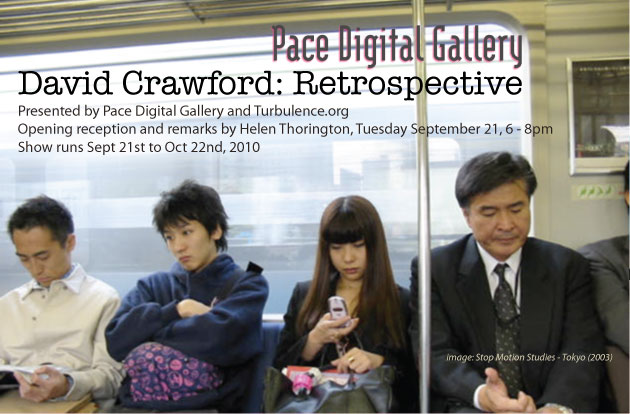

|
| |

Pace Digital Gallery and Turbulence.org are pleased to co-present David Crawford: Retrospective.
David Crawford (1970-2009) studied film, video, and new media at the Massachusetts College of Art and completed a BFA in 1997. He received several Turbulence.org Commissions, including Here and Now (1998), National Velvet (2000), and Stop Motion Studies - Tokyo (2003). In 2000, his Light of Speed project was a finalist for the SFMOMA Webby Prize for Excellence in Online Art. In 2003, Crawford’s Stop Motion Studies project received an Artport Gate Page Commission from the Whitney Museum of American Art, an Award of Distinction in the Net Vision category at the Prix Ars Electronica, and became part of the public collection of the Moderna Museet in Stockholm (SMS - Series 6). In 2004, he received an MSc from Chalmers University of Technology and taught at The School of the Art Institute of Chicago. Crawford received his PhD in 2009 from the Faculty of Fine, Applied and Performing Arts at Göteborg University in Sweden. His artwork has been featured by the Guardian and Leonardo. His writing has been published by Princeton Architectural Press and SpringerWienNewYork.
* Catalog, with essay, available online - download pdf (7.3MB)
* Opening remarks by Helen Thorington - download doc
* To view more of David’s work and read his writings, please visit his archived online studio at Turbulence.org